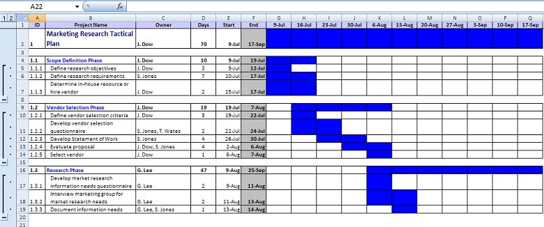
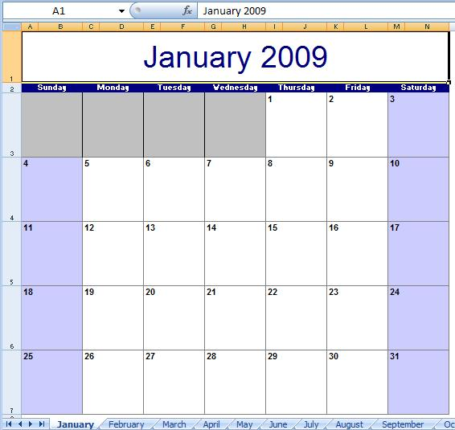
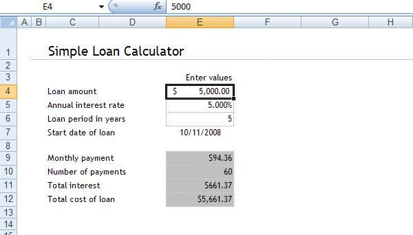
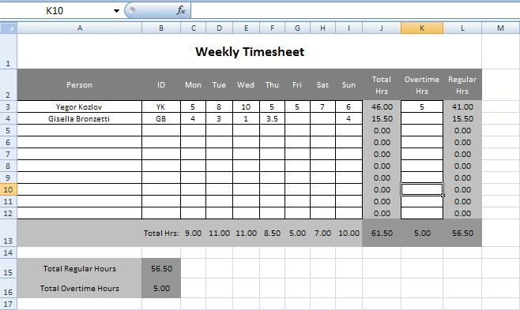

and new (OOXML - Office Open XML) formats.")

HSSF and XSSF Examples
HSSF and XSSF common examples
Apache POI comes with a number of examples that demonstrate how you can use the POI API to create documents from "real life". The examples below based on common XSSF-HSSF interfaces so that you can generate either *.xls or *.xlsx output just by setting a command-line argument:
All sample source is available in SVN
In addition, there are a handful of HSSF only and XSSF only examples as well.
Available Examples
The following examples are available:
Business Plan
The BusinessPlan application creates a sample business plan with three phases, weekly iterations and time highlighting. Demonstrates advanced cell formatting (number and date formats, alignments, fills, borders) and various settings for organizing data in a sheet (freezed panes, grouped rows).

Calendar
The Calendar demo creates a multi sheet calendar. Each month is on a separate sheet.

Loan Calculator
The LoanCalculator demo creates a simple loan calculator. Demonstrates advance usage of cell formulas and named ranges.

Timesheet
The Timesheet demo creates a weekly timesheet with automatic calculation of total hours. Demonstrates advance usage of cell formulas.

Conditional Formats
The ConditionalFormats demo is a collection of short examples showing what you can do with Excel conditional formatting in POI:
- Highlight cells based on their values
- Highlight a range of cells based on a formula
- Hide errors
- Hide the duplicate values
- Highlight duplicate entries in a column
- Highlight items that are in a list on the worksheet
- Highlight payments that are due in the next thirty days
- Shade alternating rows on the worksheet
- Shade bands of rows on the worksheet
Formula Examples
The CalculateMortgage example demonstrates a simple user-defined function to calculate principal and interest.
The CheckFunctionsSupported example shows how to test what functions and formulas aren't supported from a given file.
The SettingExternalFunction example demonstrates how to use externally provided (third-party) formula add-ins.
The UserDefinedFunctionExample example demonstrates how to invoke a User Defined Function for a given Workbook instance using POI's UDFFinder implementation.
Add Dimensioned Image
The AddDimensionedImage example demonstrates how to add an image to a worksheet and set that images size to a specific number of millimetres irrespective of the width of the columns or height of the rows.
Aligned Cells
The AligningCells example demonstrates how various alignment options work.
Cell Style Details
The CellStyleDetails example demonstrates how to read excel styles for cells.
Linked Dropdown Lists
The LinkedDropDownLists example demonstrates one technique that may be used to create linked or dependent drop down lists.
Common SS Performance Test
The SSPerformanceTest example provides a way to create simple example files of varying sizes, and to calculate how long they take. Useful for benchmarking your system, and to also test if slow performance is due to Apache POI itself or to your own code.
ToHtml
The ToHtml example shows how to display a spreadsheet in HTML using the classes for spreadsheet display.
ToCSV
The ToCSV example demonstrates one way to convert an Excel spreadsheet into a CSV file.
HSSF-only Examples
All the HSSF-only examples can be found in SVN
- CellComments
- HyperlinkFormula
- EventExample
- OfficeDrawingWithGraphics
- CreateDateCells
- NewWorkbook
- EmeddedObjects
- Hyperlinks
- OfficeDrawing
- HSSFReadWrite
- NewSheet
- SplitAndFreezePanes
- InCellLists
- RepeatingRowsAndColumns
- MergedCells
- CellTypes
- ZoomSheet
- ReadWriteWorkbook
- CreateCells
- Alignment
- FrillsAndFills
- AddDimensionedImage
- Borders
- NewLinesInCells
- WorkingWithFonts
- BigExample
- Outlines
- XLS2CSVmra
XSSF-only Examples
All the XSSF-only examples can be found in SVN
- CellComments
- HeadersAndFooters
- CreateUserDefinedDataFormats
- CreatePivotTable
- CreatePivotTable2
- FillsAndColors
- WorkingWithBorders
- BigGridDemo
- CreateTable
- CalendarDemo
- AligningCells
- SplitAndFreezePanes
- WorkingWithPageSetup
- WorkingWithPictures
- MergingCells
- CustomXMLMapping
- SelectedSheet
- EmbeddedObjects
- WorkbookProperties
- NewLinesInCells
- Outlining
- CreateCell
- IterateCells
- BarChart
- BarAndLineChart
- LineChart
- ScatterChart
- WorkingWithFonts
- HyperlinkExample
- ShiftRows
- WorkingWithRichText
- FitSheetToOnePage
- HybridStreaming
- Outlining (SXSSF output)
- DeferredGeneration (SXSSF output)
- SavePasswordProtectedXlsx (SXSSF output)
- XLSX2CSV (streaming read)
- FromHowTo (streaming read)
by Yegor Kozlov